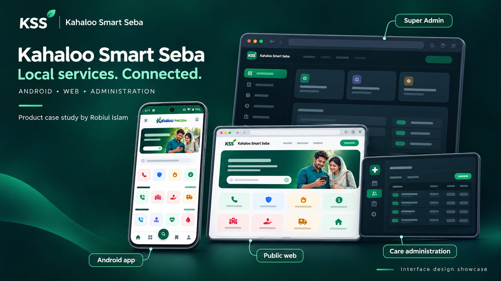

Android app
Service discovery, account access, booking entry points and Kahaloo AI assistance.
ROBIUL ISLAM · FOUNDER & FULL-STACK DEVELOPER
An Android and web product bringing people, service providers and operational teams together across Kahaloo, Bogura.

THE PROJECT
Finding a doctor, arranging transport, locating a technician and accessing local information often begin in different places. KSS brings those starting points into a shared platform and connects public service discovery with dedicated administration tools.
I lead product planning and hands-on development across the Android app, website, backend, SQL-based data systems and operational panels.
Service discovery, account access, booking entry points and Kahaloo AI assistance.
Healthcare, education, transport, technicians and other local service directories.
Content, categories, locations, forms, notices and administrative workflows.
Hospital, doctor and staff workspaces for appointment and serial coordination.
INTERFACE GALLERY
34 screens · four surfaces
These are polished UI concepts based on supplied product screenshots. Records and interface states are illustrative. The editable views are local visual prototypes.
DEVELOPMENT & OWNERSHIP
My work combines product planning, software development, database integration, service workflows, testing and Android publishing.
Visit Shebayan technologyPHP, CSS and SQL-based data systems across the website and management panels.
Appointments, service-provider access, APIs, Google Maps/location features, chatbot support and prayer-time information.
Application development, integration, troubleshooting and Google Play publishing workflows.
BUILT FOR A LOCAL COMMUNITY